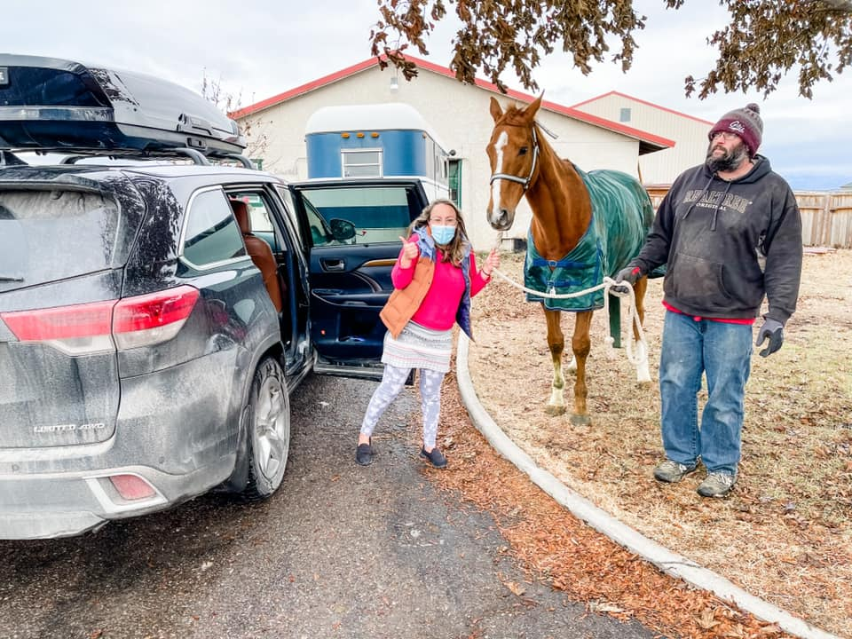
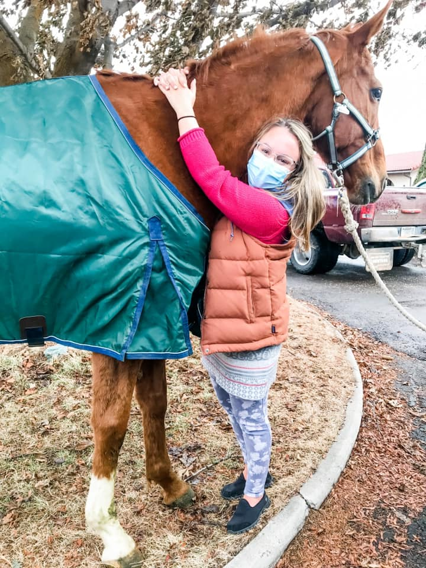
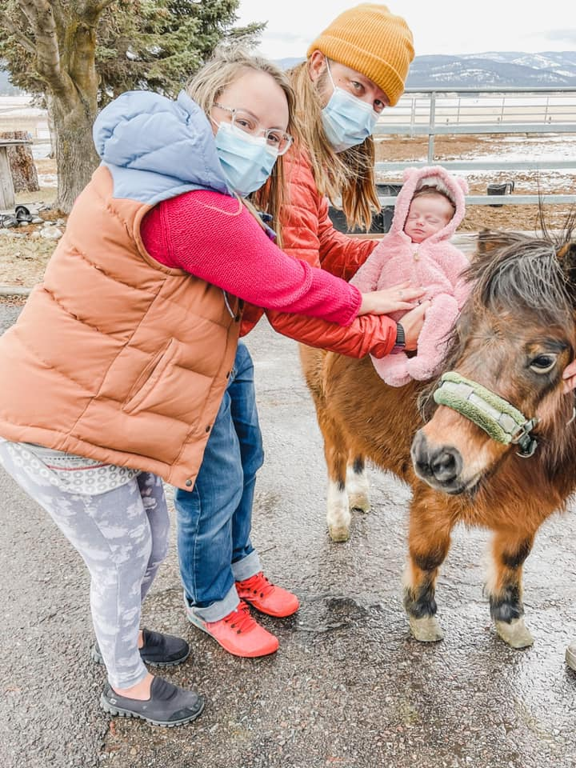

My cozy Mother-in-Law and I agreed, it was time to talk my husband into letting me out of bedrest and go on a mini-adventure.
So again, they packed me up in the back of our Highlander, blankets and my sweet baby content in the next row.
This time we went to a place that has been healing to me since I was little, the barn!
Still not being able to stand or walk more than a few minutes I knew I wouldn’t be able to do much but Joan exclaimed,
Of Course you should come today! We’ll bring Rocoso and Samantha out to you!
After I broke my arm 6 weeks after my second boy was born, a woman told me I was selfish for continuing to ride since I now had children
I’m glad I didn’t listen. This is my healing place.
As Winston Churchill once said,
"There is nothing better for the inside of a man than the outside of a horse"



Bonus: I got to introduce Lorelai to her future best pony friend Samantha!